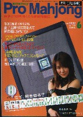

ううう....はむかしの m(_ _)m 美人雀士の話だけんど、こっちは正真正銘、いまの話。これが今月号（’02年6月）のプロ麻雀の表紙だ。最初見たとき、正直言って、どこのキャバクラ嬢かと思った....

表紙をめくって解説を見ると、清水香織という雀士だという。う〜ん、仕事を間違えたんじゃないかと思うような美人、というか出で立ちというか....思わず“女王様！”と呼びたくなるような。。。（^-^；
いずれにしても美しいことは結構なことと思いながらめくってゆくと、真ん中辺りにまた美人が写っていた。
あらぁ、これも美人だ、いったい誰かしらんと思って読むと、渡辺洋香という雀士だという。ふ〜ん、名前は聞いたことがあるが、こんな美人だったのかと思いながらさらに読みすすんで行くと、今度は和田聡子という美人雀士が。なんとニックネーム(？)は、めろん畑(゜0゜)というらしい。
うーみゅ、もう目移りがして、誰が誰やら。。。。(^-^；
しかしこうして女性雀士が増えるのは大いに結構な話だけんど、各プロ団体のこういう路線（？）をみていると、こちらでカキコしたように、麻雀プロ○○という団体名のは、なんだか麻雀プロダクション○○の略みたいな気がしてくる....
|